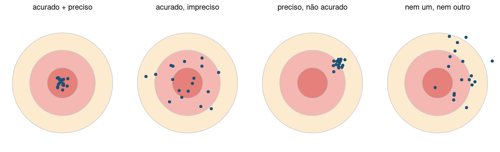
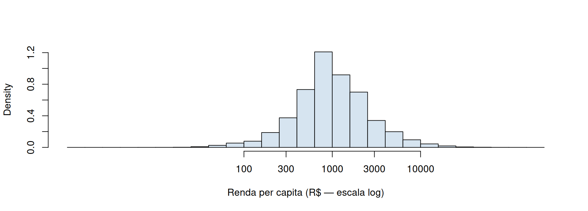
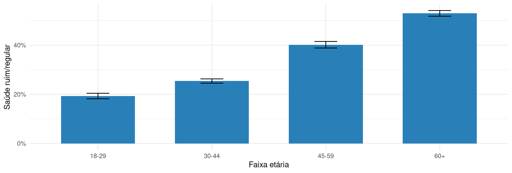

setwd("C:/Users/voce/Documents/workshop-pns") # ajuste para a SUA pasta
list.files("data") # confere: os três .rds devem aparecerWorkshop DEMOPOP · análise de amostra complexa em R
2026-07-03
Baixe o material em demopop.github.io/pns-survey: o script tutorial.R e os dados (data/). Organize numa pasta de trabalho:
workshop-pns/
├── tutorial.R
└── data/
├── populacao_sintetica.rds
├── pns2019.rds
└── pns2013.rdsE aponte o R para essa pasta (o working directory), para que os caminhos data/... funcionem:
Antes de qualquer análise, a pergunta: como o dado foi gerado?
A UNECE (2013) classifica as fontes de Big Data por como nascem:
A distinção que importa: dados que desenhamos (a pesquisa amostral, com probabilidade de seleção conhecida) × dados que apenas encontramos (sem desenho — quem está dentro? com que chance?).
A análise “ingênua” assume, sem dizer, uma amostra aleatória simples — todos com peso igual, como se cada respondente valesse por si só.
Mas a PNS é estratificada, conglomerada e com pesos desiguais. Ignorar isso:
O survey existe para uma coisa: estimar respeitando o desenho. Vamos construir esse desenho peça por peça.
Geramos uma população inteira — REGIÃO > MUNICÍPIO > DOMICÍLIO > PESSOA — espelhando a hierarquia da PNS. Como temos todo mundo, a verdade é conhecida:
[1] 5596[1] 0.2915Centro-Oeste Nordeste Norte Sudeste Sul
0.230 0.392 0.341 0.263 0.187 A cada passo do plano vamos sortear uma amostra e ver a estimativa bater (ou não) nessa verdade.
Nota
Decida antes: sorteando 300 das 5596 pessoas, quão perto de 0.291 a estimativa deve cair?
set.seed(1)
am <- pop[sample(N, 300), ] # sorteia 300 pessoas ao acaso
am$peso <- N / 300 # peso igual = N/n
am$fpcN <- N
# svydesign(): ids=~1 -> sem conglomerados; weights -> pesos; fpc -> correção de pop. finita
des_aas <- svydesign(ids = ~1, weights = ~peso, fpc = ~fpcN, data = am)
svymean(~saude_ruim, des_aas) # média de variável 0/1 = PROPORÇÃO mean SE
saude_ruim 0.28333 0.0254A estimativa cai perto da verdade; o erro-padrão (≈ 0,025) é o erro amostral.
Nota
Decida antes: estratificar por região melhora a precisão? E igual para saúde e renda?
set.seed(2)
am_e <- pop |> group_by(regiao) |> slice_sample(prop = 300/N) |> ungroup()
am_e <- am_e |> left_join(Nh_df, by = "regiao") |>
group_by(regiao) |> mutate(peso = Nh / n()) |> ungroup() # peso = Nh/nh
des_est <- svydesign(ids = ~1, strata = ~regiao, weights = ~peso, fpc = ~Nh, data = am_e)
c(saude = SE(svymean(~saude_ruim, des_est)), renda = SE(svymean(~rdpc, des_est))) saude renda
0.024743 18.089106 Ganho grande na renda (varia muito entre regiões), pequeno na saúde (varia pouco). Estratificar ajuda na medida em que o desfecho difere entre os estratos.
Nota
Decida antes: sorteando 15 municípios × 25 pessoas (n = 375), o erro-padrão sobe ou desce?
set.seed(7)
sel <- sample(muns, mm) # 1º estágio: sorteia municípios (UPAs)
am_c <- pop |> filter(municipio %in% sel) |>
group_by(municipio) |> slice_sample(n = ni) |> ungroup() # 2º estágio: pessoas em cada
am_c <- am_c |> left_join(Ni_df, by = "municipio") |> mutate(peso = (M/mm)*(Ni/ni))
des_cl <- svydesign(ids = ~municipio, weights = ~peso, data = am_c) # ids = conglomerados
svymean(~saude_ruim, des_cl, deff = TRUE) # deff = efeito do plano amostral mean SE DEff
saude_ruim 0.297868 0.033784 2.1865Sobe: pessoas do mesmo município se parecem (correlação intraclasse) → deff ≈ 2,2.
Nota
Decida antes: vamos sobre-amostrar o Nordeste (saúde pior). A média sem peso fica acima ou abaixo da verdade?
set.seed(9)
mc <- replicate(300, { # repete o sorteio desigual 300 vezes
a <- sortear_desigual()
c(ingenua = mean(a$saude_ruim),
ponderada = coef(svymean(~saude_ruim,
svydesign(ids=~1, strata=~regiao, weights=~peso, data=a)))[[1]])
})
round(rowMeans(mc), 4) # ingênua (enviesada) × ponderada (correta) ingenua ponderada
0.3123 0.2957 A ingênua fica acima (≈ 0,31): o peso corrige o ponto. Mas o próprio peso infla a variância: \(\text{deff}_w \approx 1 + \text{CV}^2(w)\).
Se você analisa um desenho conglomerado como se fosse AAS, o IC mente. Medimos a cobertura de 500 amostras:
set.seed(5)
cob <- replicate(500, {
a <- sortear_cluster()
des_c <- svydesign(ids = ~municipio, weights = ~peso, data = a) # CERTO
des_i <- svydesign(ids = ~1, weights = ~peso, data = a) # INGÊNUO
est <- coef(svymean(~saude_ruim, des_c))
c(desenho = abs(est-P)/SE(svymean(~saude_ruim, des_c)) < 1.96,
ingenuo = abs(est-P)/SE(svymean(~saude_ruim, des_i)) < 1.96)
})
round(rowMeans(cob) * 100, 1) # % das vezes em que o IC95% cobriu a verdadedesenho ingenuo
98.0 81.8 O IC do desenho cobre ~95% (honesto); o ingênuo, ~82% — promete 95% e entrega 82%.
Cada peça, isolada, mostrou seu efeito:
| peça | efeito | argumento do svydesign |
|---|---|---|
| estrato | ↓ erro-padrão | strata = |
| conglomerado | ↑ erro-padrão (deff) | ids = |
| peso | corrige o viés | weights = |
A PNS combina as três num só desenho. Na Parte 2, declaramos exatamente isso — agora com os microdados reais.
A Pesquisa Nacional de Saúde (IBGE/Ministério da Saúde, 2013 e 2019) investiga saúde, estilos de vida e acesso a serviços. É domiciliar, de abrangência nacional, com um módulo respondido por um morador adulto sorteado do domicílio.
Um único arquivo de microdados; três questionários, cada um com seu bloco de peso:
V0028;V0029 / V00291;Usamos o morador selecionado, 18+.
Desenho: estratificado + por conglomerados (UPAs sorteadas por PPS — probabilidade proporcional ao tamanho) + dois estágios (UPA → domicílio → morador selecionado).
No survey, isso vira quatro argumentos:
| conceito | variável PNS | argumento |
|---|---|---|
| estrato | V0024 |
strata = |
| conglomerado (UPA) | UPA_PNS |
ids = |
| peso (calibrado) | V00291 |
weights = |
| UPA dentro do estrato | — | nest = TRUE |
Stratified 1 - level Cluster Sampling design (with replacement)
With (8027) clusters.
svydesign(ids = ~UPA_PNS, strata = ~V0024, weights = ~peso_sel_cal,
nest = TRUE, data = pns19)Declaramos o desenho na mão, deixando cada peça explícita — sem caixa-preta.
O peso bruto vem de \(1/\pi_i\). A calibração ajusta esses pesos para que a amostra reproduza totais populacionais conhecidos (projeções de população por sexo × idade na data de referência).
sem_calib calibrado
0.651 0.661 Sem calibração: 65,1%. Calibrado (oficial, V00291): 66,1% — o publicado pelo IBGE.
A pós-estratificação força a amostra a bater as contagens de população por domínio (V00293), segundo as projeções (V00292). É como se obtém o erro-padrão exato do IBGE:
totais <- unique(data.frame(V00293 = pns19$V00293, Freq = pns19$proj_dom))
des_ps <- postStratify(svydesign(ids=~UPA_PNS, strata=~V0024, weights=~peso_sel,
data=pns19, nest=TRUE), ~V00293, population=totais)
c(atalho = SE(svymean(~saude_boa, des)), # peso V00291 direto
oficial = SE(svymean(~saude_boa, des_ps))) # pós-estratificado atalho oficial
0.00310093 0.00303795 Mesmo ponto, SE menor: com o peso calibrado pronto, o svydesign não sabe que os totais são conhecidos (SE conservador); o postStratify sabe e desconta a variância das contagens.
autoavalMuito boa autoavalBoa autoavalRegular autoavalRuim
15.2 50.9 28.1 4.6
autoavalMuito ruim
1.2 Bate exatamente com o divulgado (boa/muito boa 66,1; regular 28,1; ruim/muito ruim 5,8). Reproduzir o oficial valida o pipeline antes de explorar o que não foi publicado.
svyby| sexo | saude_ruim | ci_l | ci_u | |
|---|---|---|---|---|
| Homem | Homem | 29.6 | 28.8 | 30.4 |
| Mulher | Mulher | 37.7 | 36.9 | 38.4 |
Mulheres avaliam a própria saúde como ruim/regular mais que homens (37,7% × 29,6%) — um achado que a tabela agregada esconde. Subpopulação se faz com subset(des, ...), nunca filtrando o data.frame.
O coeficiente de variação (cv = SE/estimativa) mede a precisão relativa. O IBGE omite estimativas com CV alto.
Mas o CV tem limites:
Precisão não é o mesmo que validade.
Precisão é o quanto os tiros se agrupam (dispersão); acurácia é o quanto acertam o centro (viés). São independentes — dá para ser preciso e estar sistematicamente fora:

O CV mede só a precisão (dispersão) — nunca a acurácia (viés).
| sexo | ideacao | ci_l | ci_u | |
|---|---|---|---|---|
| Homem | Homem | 2.8 | 0.0251813 | 0.0308254 |
| Mulher | Mulher | 6.2 | 0.0583889 | 0.0666824 |
≈ 4,6% dos adultos relatam pensamentos de que seria melhor estar morto/de autolesão nas duas semanas anteriores — mais entre mulheres. Um sinal que só os microdados captam.
grupoambos gruponenhum gruposó diagnóstico
4.0 82.9 6.2
gruposó rastreio (PHQ-9)
6.8 Rastreio (PHQ-9 ≥ 10) e diagnóstico autorreferido captam populações que pouco se sobrepõem — depressão não tratada × diagnosticada.
itens <- c("V00201","V00202","V00203","V00204","V00205", # psicológica
"V01401","V01402","V01403","V01404","V01405", # física
"V02701","V02702") # sexual
des <- update(des,
viol_qq = rowSums(sapply(pns19[itens], \(x) (x=="1") %in% TRUE)) > 0, # algum item = "Sim"
companheiro = (V006 == "01") %in% TRUE)
round(100*as.numeric(coef(svyciprop(~viol_qq, subset(des, sexo=="Mulher"), na.rm=TRUE))), 1) # % mulheres c/ violência[1] 19.4[1] 16.519,4% das mulheres sofreram alguma violência nos 12 meses; entre as agredidas, em 16,5% o principal agressor foi o companheiro — a face doméstica, que o microdado isola.
orient_sexualHeterossexual orient_sexualHomossexual orient_sexualBissexual
97.0 0.7 1.2
orient_sexualOutra orient_sexualNão sabe orient_sexualNão respondeu
0.1 1.1 0.0 A PNS 2019 foi a 1ª pesquisa domiciliar nacional a perguntar orientação sexual: ≈ 1,9% não-heterossexual. Categorias pequenas → CV alto e cuidado redobrado ao desagregar.

svyhist usa os pesos: descreve a população. Em escala log, a renda revela a mediana ≈ R$ 1.000 e a cauda da desigualdade.
des <- update(des, faixa = cut(idade, c(17,29,44,59,Inf), # faixa etária no desenho
labels = c("18-29","30-44","45-59","60+")))
est <- svyby(~saude_ruim, ~faixa, des, svymean, vartype = "ci")
ggplot(est, aes(faixa, saude_ruim)) +
geom_col(fill = "#2980b9", width = .65) +
geom_errorbar(aes(ymin = ci_l, ymax = ci_u), width = .2) + # IC 95%
scale_y_continuous(labels = scales::percent) +
labs(x = "Faixa etária", y = "Saúde ruim/regular") + theme_minimal()
A saúde percebida piora com a idade; as barras de erro mostram que o padrão é firme, não ruído.
svyglm) OR 2.5 % 97.5 %
sexoMulher 1.43 1.36 1.50
faixa30-44 1.45 1.33 1.59
faixa45-59 3.05 2.78 3.35
faixa60+ 5.31 4.86 5.79Mulheres têm ~1,4× a chance de avaliar a saúde como ruim/regular; o efeito da idade é forte.
Os coeficientes mudam pouco com os pesos. Os erros-padrão mudam muito com a conglomeração:
desenho ingenuo
0.0259 0.0151 SE ingênuo ≈ 0,015 × desenho ≈ 0,026: ignorar o plano subestima a incerteza em ~40%.
PNS 2013 e 2019 são amostras independentes. Logo, a variância da diferença é a soma das variâncias:
\[\text{Var}(\hat\theta_{19} - \hat\theta_{13}) = \text{Var}(\hat\theta_{19}) + \text{Var}(\hat\theta_{13})\]
Cuidados: harmonizar as variáveis, restringir a 18+ nas duas, e lembrar que orientação sexual e o módulo V só existem em 2019.
des13 <- svydesign(ids=~UPA_PNS, strata=~V0024, weights=~peso_sel_cal, data=pns13, nest=TRUE)
compara <- function(v) {
e13 <- svyciprop(reformulate(v), des13); e19 <- svyciprop(reformulate(v), des)
dif <- coef(e19) - coef(e13); se <- sqrt(SE(e13)^2 + SE(e19)^2)
c(`2013%` = round(coef(e13)*100,1), `2019%` = round(coef(e19)*100,1),
dif = round(dif*100,1), z = round(dif/se,1))
}
t(sapply(c(saude_ruim="saude_ruim", depr_diag="depr_diag", ideacao_suicida="ideacao_suicida"), compara)) 2013%.saude_ruim 2019%.saude_ruim dif.saude_ruim z.saude_ruim
saude_ruim 33.8 33.9 0.1 0.2
depr_diag 7.6 10.2 2.6 9.3
ideacao_suicida 3.7 4.6 0.9 4.5Autoavaliação estável; depressão diagnosticada e ideação suicida sobem de forma significativa entre 2013 e 2019.
subset(des, ...) — quebra a variância dos domínios.glm/mean comuns com peso — o ponto até sai, mas o erro-padrão mente.nest = TRUE — UPAs de estratos diferentes se confundem.Sempre com três números e a fonte do desenho:
“Em 2019, X,X% (IC95% [a, b]) dos adultos… — PNS, peso calibrado
V00291, desenho estratificado e conglomerado.”
E uma frase sobre o que não se mede: cobertura, não-resposta, subdeclaração do tema sensível.
O survey não é burocracia: é a diferença entre descrever a sua amostra e inferir sobre a população.
O desenho que o IBGE construiu — estratos, conglomerados, pesos calibrados — carrega a informação que torna a inferência válida. Declará-lo é honrar esse desenho.
E todo número tem uma sombra: a incerteza amostral (que medimos) e os vieses que ele não capta (que declaramos).
Caio César Soares Gonçalves Departamento de Demografia / CEDEPLAR-UFMG
Material completo: demopop.github.io/pns-survey
Refs.: Silva & Dias (Amostragem com R, 2020) · Lumley (survey, JSS 2004) · IBGE (PNS, notas técnicas)